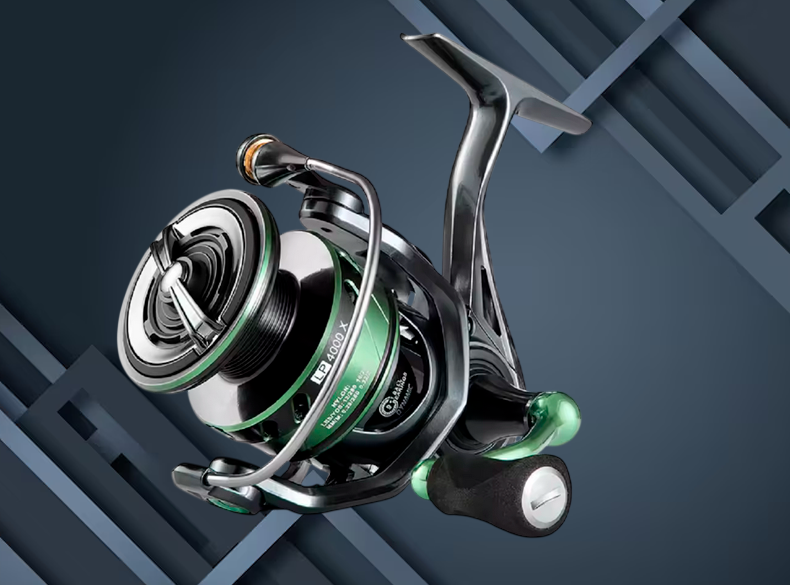
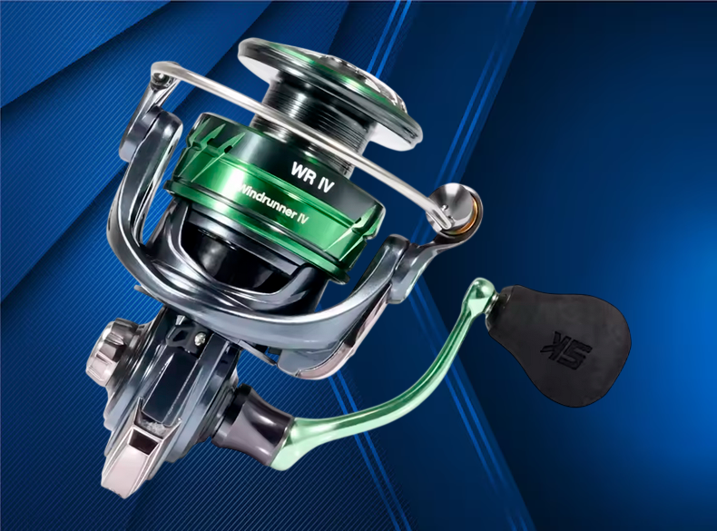

Análisis del SeaKnight WR IV: El "Tanque" Low Cost
El SeaKnight WR IV (Windrunner) se ha consolidado como la evolución definitiva de la serie. A diferencia de su predecesor, este modelo introduce mejoras críticas en el sellado contra el salitre y una reducción de peso que lo sitúa como el rival a batir en el rango de los 25-35€. Es la opción predilecta para quienes buscan un equipo de Eging o Spinning ligero sin pagar el sobrecoste de las marcas niponas.
Tecnología y Construcción
- Rotor Asimétrico de Carbono: Un diseño que reduce la inercia de inicio, permitiendo que el carrete gire con apenas un toque, vital para detectar picadas sutiles de calamar.
- Sistema de Sellado WR: Incorpora juntas tóricas en puntos críticos (eje y cuerpo), ofreciendo una protección superior contra salpicaduras y arena.
- Manivela Roscada Directa: A diferencia de los carretes de 15€, la manivela se rosca directamente al engranaje principal, eliminando cualquier holgura molesta.
- Guía de hilos cerámico: Optimizado para hilos trenzados (PE) de diámetros pequeños, evitando el desgaste por fricción.
Rendimiento en Acción
Tras probarlo en jornadas de Eging, la sensación es de un carrete muy equilibrado. Sus 9+1 rodamientos de acero inoxidable ofrecen una recuperación suave que no esperarías por este precio.
El freno de fibra de carbono es el verdadero protagonista: con una potencia de hasta 13 kg, el arrastre es lineal y sin tirones, lo que evita desgarros en los tentáculos del calamar cuando deciden dar el último arreón bajo la caña.
Especificaciones Técnicas
- Rodamientos: 9 + 1 BB (Acero Inoxidable)
- Ratio de Recuperación: 5.2:1 (Equilibrio potencia/velocidad)
- Freno Máximo: 11kg (serie 2000/3000) a 13kg (serie 4000+)
- Material del Cuerpo: Grafito de alta densidad y rotor de carbono
- Peso: Aprox. 235g (Tamaño 2500)
¿Por qué elegir el WR IV para tu equipo?
- Eging: El tamaño 2000/2500 es perfecto para cañas ligeras.
- Resistencia: Mejor aguante al salitre que el Piscifun Flame.
- Precisión: Sin holguras en la manivela gracias al sistema de roscado.
Pros y Contras
✅ A favor: Relación calidad-precio imbatible, muy ligero y estanco para su gama.
❌ En contra: El bobinado puede requerir ajustar las arandelas de la bobina (incluidas) para dejarlo perfecto.